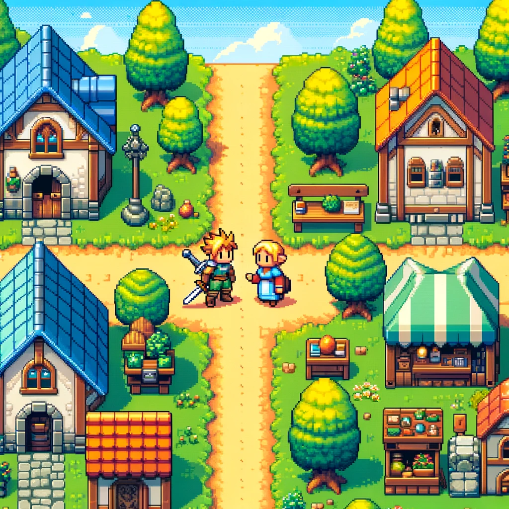
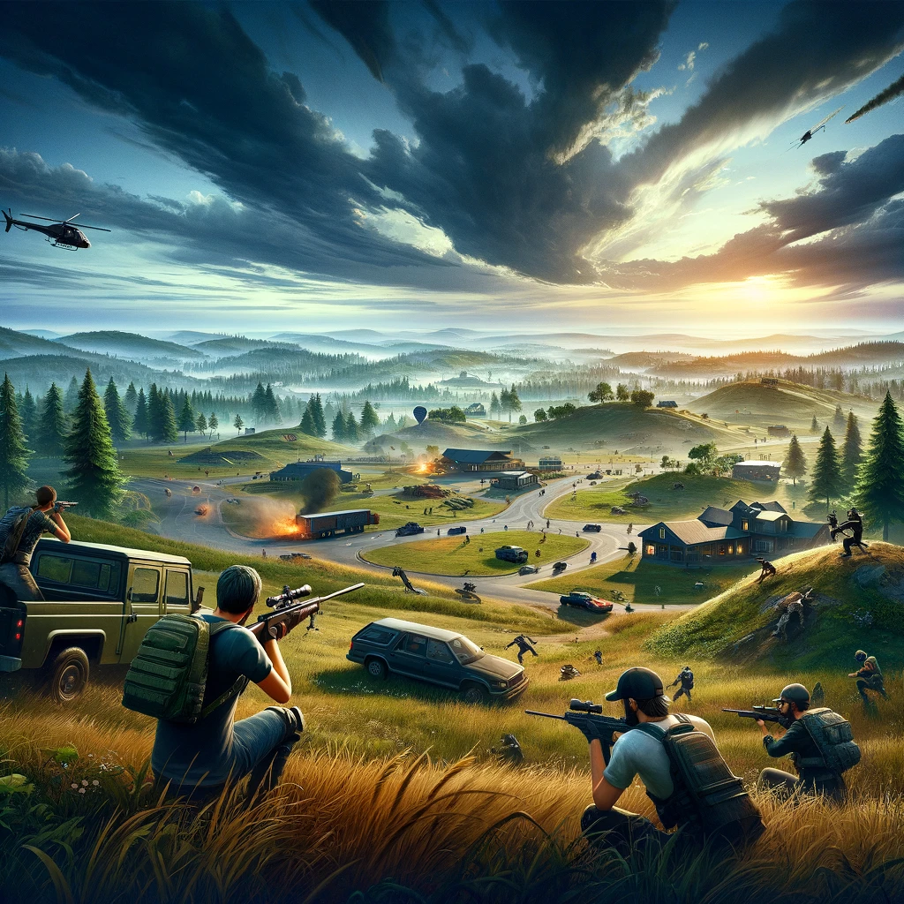
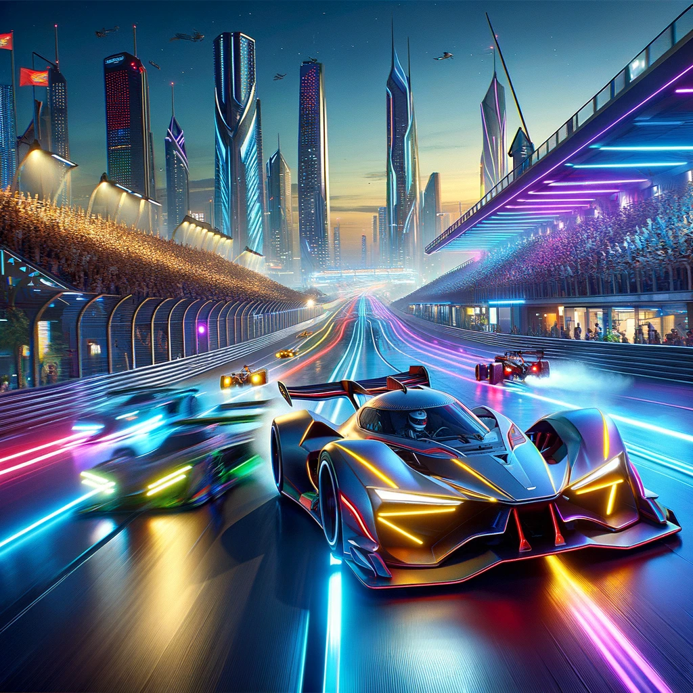
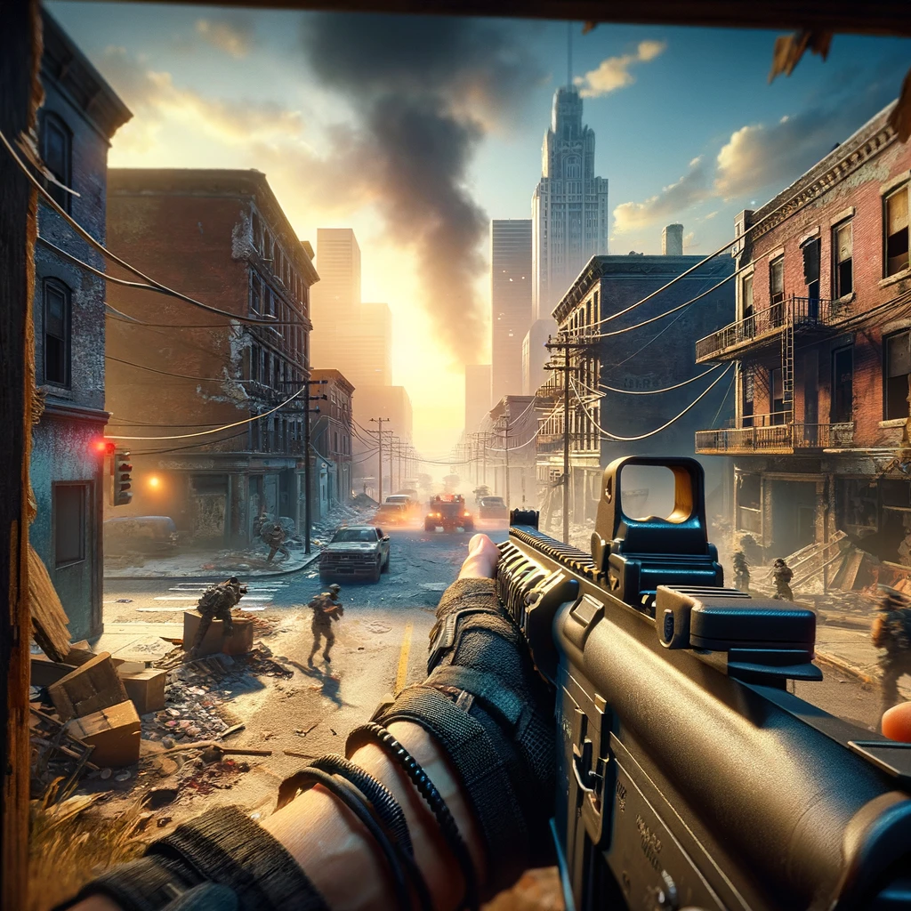

The world of video games is massive with millions of games in existence. Some of them made by
multimillionaire
industries and having a budget of millions, others being made by single individuals without any budget.
The content below explores different types of games.

Role-playing games (RPGs) are a genre of video games where players assume the roles of characters in a fictional setting. These games are characterized by their deep storylines,
complex character development, and immersive worlds. Players navigate through these stories,
making choices that can alter the game's narrative and outcome. RPGs often incorporate elements of strategy,
puzzles, and exploration, alongside combat and quests.

Battle Royale games are a thrilling and competitive genre of video games that blend survival,
exploration, and scavenging elements of a survival game with last-man-standing gameplay.
Typically set in a large, shrinking play area, players must fight to be the last person or team standing,
all while navigating the challenge of a diminishing safe zone.
These games start with players, either solo or in teams, parachuting from an aircraft onto a vast and often deserted map.
With no equipment or weapons at the outset, players must quickly scavenge for resources, weapons, and gear scattered throughout
buildings, landmarks, and other locations on the ground.

Racing Games Racing games are a dynamic and exhilarating genre of video games that simulate the fast-paced
excitement of racing competitions. These games can replicate various forms of real-life racing,
including car, motorcycle, boat, and even futuristic vehicle races. The genre is known for its broad appeal,
catering to casual gamers with arcade-style gameplay as well as to enthusiasts seeking the depth and realism of
simulation racing.
At the heart of racing games is the thrill of speed and the challenge of maneuvering vehicles through diverse
tracks and environments.

First-person shooter is renowned for its intense, fast-paced combat and deeply immersive storytelling,
setting the standard for military-themed video games. Spanning various eras and conflicts, from World War II to
futuristic battles in outer space, the franchise offers players a diverse range of settings and narratives.
Each installment is celebrated for its realistic depiction of warfare, advanced graphics, and meticulously
designed multiplayer experiences.
The series has built a loyal following thanks to its engaging single-player campaigns,
which place players in the boots of soldiers across different theatres of war, bringing historical battles
and speculative future conflicts to life with dramatic flair.